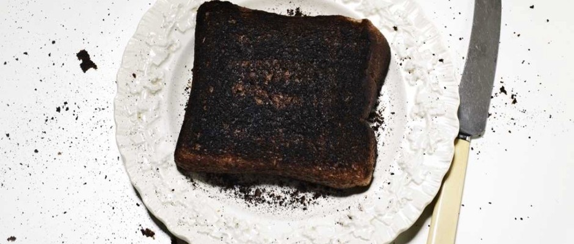

Sad Toast

Description
A step by step guide on how to make yourself the saddest little slice
of toast you've ever tasted.
Ingredients
- Wholemeal bread
- Margarine
- One cup of Arsenic
Steps
- Place one slice of wholemeal bread into toaster
- Toast bread until it is severely burnt
- Spread margarine onto burnt toast
- Drizzle arsenic onto burnt margarine toast
- Enjoy!